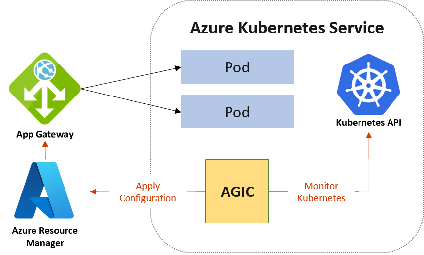
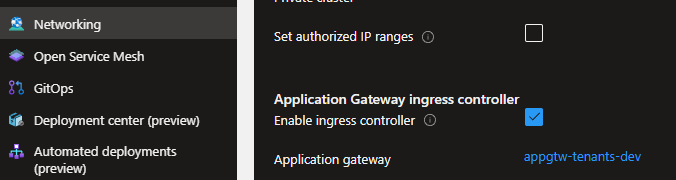
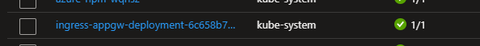
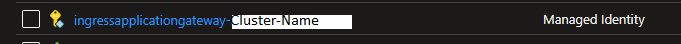
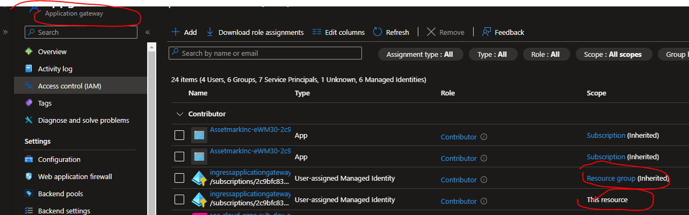
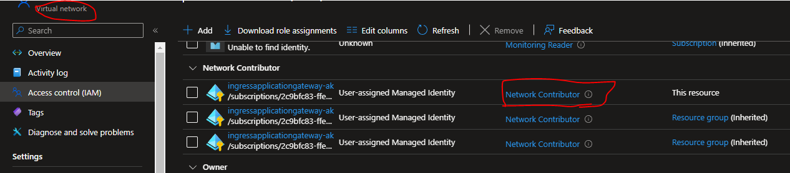

Setup Application Gateway ingress controller (AGIC) in AKS using Terraform
Introduction
There are several ways to setup the Ingress in AKS. In a previous session, we explored the setup using the Nginx Ingress controller. Now, we will into the Application Gateway Ingress Controller (AGIC).
There are two distinct methods to setup an ingress controller in AKS:
- Setup NGINX ingress controller in AKS using Terraform
- Setup Application Gateway ingress controller (AGIC) in AKS using Terraform
What is AGIC?
The Application Gateway Ingress Controller allows Azure Application Gateway to be used as the ingress for an Azure Kubernetes Service aka AKS cluster. AGIC monitors the Kubernetes cluster it's hosted on and continuously updates an Application Gateway, so that selected services are exposed to the Internet.
Note
In order to setup Application Gateway Ingress Controller, we must need AKS and Application Gateway azure resources.
Benefits of AGIC
Let's explore some of the advantages of AGIC when compared to other ingress controllers.
-
Simplified Architecture: AGIC eliminates the need for an additional load balancer or public IP address in front of your AKS cluster. This streamlines your architecture and reduces the complexity of your network setup.
-
Efficient Data Routing: Unlike some ingress controllers that involve multiple hops for requests to reach the AKS cluster, AGIC communicates directly with pods using their private IP addresses. This minimizes data traversal and leads to better overall performance.
-
Resource Efficiency: AGIC operates exclusively with Standard_v2 and WAF_v2 SKUs, which offer autoscaling capabilities. This means that AGIC can dynamically adjust its resources in response to changes in traffic load without impacting your AKS cluster's resources.
-
Enhanced Security: AGIC, when used in conjunction with Application Gateway, provides additional security features such as TLS policy enforcement and Web Application Firewall (WAF) functionality. This helps safeguard your AKS cluster and applications from threats and vulnerabilities.
Technical Scenario
As a Cloud Engineer you've been asked to setup the AGIC ingress controller in an Azure Kubernetes Service (AKS) cluster. also deploy couple of applications in the AKS cluster, each of which is accessible over the single IP address.
Architecture diagram
Here is the reference architecture diagram of AGIC components from MSDN documentation.

Prerequisites
Ensure that you have a Kubernetes cluster & Application Gateway up and running along with following:
- Azure subscription - https://azure.microsoft.com/en-us/free/
- Install and configure Terraform - https://www.terraform.io/downloads
- Setup Terraform Foundation
- Install azure CLI - https://learn.microsoft.com/en-us/cli/azure/install-azure-cli
- Install and setup kubectl - https://kubernetes.io/docs/tasks/tools/install-kubectl-windows/
- AKS cluster was created with Azure CNI and managed identities
- Application Gateway v2 in the same virtual network as AKS
Objective
In this exercise we will accomplish & learn how to implement following:
- Step-1: Enable AGIC add-on in AKS cluster
- Step-2: Create role assignment for AGIC Pod
- Step-3: Verify the installation
- Step-4: Deploy an application
- Step-5: Verify Changes in Application Gateway
- Step-6: Access Your Application
login to Azure
Verify that you are logged into the right Azure subscription before start anything in visual studio code
# Login to Azure
az login
# Shows current Azure subscription
az account show
# Lists all available Azure subscriptions
az account list
# Sets Azure subscription to desired subscription using ID
az account set -s "anji.keesari"
Connect to Cluster
# Azure Kubernetes Service Cluster User Role
az aks get-credentials -g "rg-aks-dev" -n "aks-cluster1-dev"
# Azure Kubernetes Service Cluster Admin Role
az aks get-credentials -g "rg-aks-dev" -n "aks-cluster1-dev" --admin
# get nodes
kubectl get no
kubectl get namespace -A
Implementation Details
The steps given below will guide you through the process of setting up Application Gateway Ingress Controller (AGIC) in your AKS cluster. By the end of this exercise, you'll have a functional environment for ingress route working for applications within Kubernetes.
Step-1: Enable AGIC add-on in AKS cluster
Setting up AGIC in an existing AKS cluster can be done in various ways. In this guide, we'll utilize a Terraform script for configuration.
Use this Terraform script to enable the Application Gateway Ingress Controller (AGIC) add-on for your Azure Kubernetes Services (AKS) cluster:
Add this piece of code to your existing AKS Terraform configuration, this was created as part of AKS setup. After that, run the following commands:
Run Terraform Plan & Apply:
Execute these commands to see your changes in action:
terraform plan -out=dev-plan -var-file="./environments/dev-variables.tfvars"
terraform apply dev-plan
Verify the AGIC Add-on in AKS:
Once the Terraform apply has completed successfully, go to your AKS cluster's networking tab. Ensure that AGIC is selected, and you'll also find the application gateway name there.

Check the AGIC Pod
You'll notice a new pod created in the kube-system namespace within your AKS resource group.

Check the AGIC Managed Service Identity (MSI):
Verify the existence of the following managed identity in the MC_rg_xxx resource group.

Step-2: Create role assignment for AGIC Pod
The Application Gateway Ingress Controller (AGIC) pod requires specific permissions on the Azure Application Gateway to function correctly. These permissions include:
-
Read Permission: AGIC needs to retrieve the current configuration of the Azure Application Gateway, including the list of listeners, rules, and backend pools.
-
Write Permission: AGIC needs to configure the Azure Application Gateway to route traffic to applications on the AKS cluster. This involves creating and updating listeners, rules, and backend pools.
-
Delete Permission: AGIC needs to delete resources that are no longer needed, like listeners and rules that are no longer in use.
These permissions enable AGIC to manage load balancing rules effectively for AKS cluster applications. The specific Azure RBAC role providing these permissions may vary based on your Azure environment's configuration. Typically, the Contributor role is sufficient.
- reference - https://learn.microsoft.com/en-us/azure/application-gateway/ingress-controller-install-existing
Follow these steps:
1. Get the Managed Identity ID of the AGIC Pod in AKS Cluster
When you create an AKS cluster, it generates an additional resource group that starts with "MC_" followed by the cluster name and location. This resource group is used for managing various resources related to the AKS cluster. When you enable the AGIC (Application Gateway Ingress Controller) add-on, AGIC pod's managed identity is automatically created within this resource group.
Here's a Terraform configuration to retrieve the resource ID of this managed identity from the Azure Managed Cloud resource group:
data "azurerm_user_assigned_identity" "pod_identity_appgw" {
name = "ingressapplicationgateway-${azurerm_kubernetes_cluster.aks.name}"
resource_group_name = "MC_${data.azurerm_resource_group.rg.name}_${azurerm_kubernetes_cluster.aks.name}_${var.aks_rg_suffix}"
depends_on = [
data.azurerm_resource_group.rg,
azurerm_kubernetes_cluster.aks,
]
}
2. Contributor role to the AGIC pod on the Application Gateway
Create a Terraform configuration to grant the Contributor role to the AGIC pod on the Application Gateway.
resource "azurerm_role_assignment" "identity_appgw_contributor_ra" {
scope = azurerm_application_gateway.appgtw.id
role_definition_name = "Contributor"
principal_id = data.azurerm_user_assigned_identity.pod_identity_appgw.principal_id
# skip_service_principal_aad_check = true
lifecycle {
ignore_changes = [
skip_service_principal_aad_check,
]
}
depends_on = [
azurerm_kubernetes_cluster.aks,
azurerm_application_gateway.appgtw
]
}
3. Reader access to the Application Gateway resource group
Provide the identity with Reader access to the Application Gateway resource group by adding the following Terraform configuration:
# Give the identity Reader access to the Application Gateway resource group.
resource "azurerm_role_assignment" "identity_appgw_reader_ra" {
scope = data.azurerm_resource_group.rg.id
role_definition_name = "Reader"
principal_id = data.azurerm_user_assigned_identity.pod_identity_appgw.principal_id
# skip_service_principal_aad_check = true
lifecycle {
ignore_changes = [
skip_service_principal_aad_check,
]
}
depends_on = [
data.azurerm_resource_group.rg,
azurerm_kubernetes_cluster.aks,
azurerm_application_gateway.appgtw
]
}
4. Network Contributor access
Give the Network Contributor access to the Application Gateway subnet's Virtual network or vnet's resource group.
resource "azurerm_role_assignment" "identity_appgw_network_contributor_ra" {
# scope = data.azurerm_virtual_network.hub_vnet.id
scope = data.azurerm_resource_group.hub_vnet_rg.id
role_definition_name = "Network Contributor"
principal_id = data.azurerm_user_assigned_identity.pod_identity_appgw.principal_id
# skip_service_principal_aad_check = true
lifecycle {
ignore_changes = [
skip_service_principal_aad_check,
]
}
depends_on = [
azurerm_kubernetes_cluster.aks,
azurerm_application_gateway.appgtw
]
}
5. Validate Role Assignments
These configurations ensure that the AGIC pod has the necessary permissions to interact with the Application Gateway.
Application Gateway Access Control (IAM)

Virtual Network Access Control (IAM)

Please note that these permissions should be carefully managed to maintain security and access control in your environment.
6. Validate AGIC pod logs
output outputI0902 16:13:40.683379 1 reflector.go:381] pkg/mod/k8s.io/client-go@v0.21.2/tools/cache/reflector.go:167: forcing resync
I0902 16:13:40.779898 1 reflector.go:381] pkg/mod/k8s.io/client-go@v0.21.2/tools/cache/reflector.go:167: forcing resync
I0902 16:13:41.493144 1 reflector.go:381] pkg/mod/k8s.io/client-go@v0.21.2/tools/cache/reflector.go:167: forcing resync
I0902 16:13:53.403917 1 reflector.go:530] pkg/mod/k8s.io/client-go@v0.21.2/tools/cache/reflector.go:167: Watch close - *v1.Endpoints total 7 items received
I0902 16:13:58.672502 1 reflector.go:530] pkg/mod/k8s.io/client-go@v0.21.2/tools/cache/reflector.go:167: Watch close - *v1.Pod total 13 items received
I0902 16:14:10.581990 1 reflector.go:381] pkg/mod/k8s.io/client-go@v0.21.2/tools/cache/reflector.go:167: forcing resync
I0902 16:14:10.640850 1 reflector.go:381] pkg/mod/k8s.io/client-go@v0.21.2/tools/cache/reflector.go:167: forcing resync
I0902 16:14:10.641353 1 reflector.go:381] pkg/mod/k8s.io/client-go@v0.21.2/tools/cache/reflector.go:167: forcing resync
I0902 16:14:10.683622 1 reflector.go:381] pkg/mod/k8s.io/client-go@v0.21.2/tools/cache/reflector.go:167: forcing resync
I0902 16:14:10.780401 1 reflector.go:381] pkg/mod/k8s.io/client-go@v0.21.2/tools/cache/reflector.go:167: forcing resync
I0902 16:14:11.495856 1 reflector.go:381] pkg/mod/k8s.io/client-go@v0.21.2/tools/cache/reflector.go:167: forcing resync
Step-3: Deploy a sample application by using AGIC for ingress on the AKS cluster.
Step-3: Verify the Installation
Check the status of the Application Gateway Ingress Controller pods to ensure it's running:
Step-3: Deploy an application
Deploy a sample application by using AGIC for ingress on the AKS cluster.
To verify that the Application Gateway + AKS + AGIC installation is set up correctly, deploy the simplest possible app:
cat <<EOF | kubectl apply -f -
apiVersion: v1
kind: Pod
metadata:
name: test-agic-app-pod
labels:
app: test-agic-app
spec:
containers:
- image: "mcr.microsoft.com/dotnet/samples:aspnetapp"
name: aspnetapp-image
ports:
- containerPort: 80
protocol: TCP
---
apiVersion: v1
kind: Service
metadata:
name: test-agic-app-service
spec:
selector:
app: test-agic-app
ports:
- protocol: TCP
port: 80
targetPort: 80
---
apiVersion: networking.k8s.io/v1
kind: Ingress
metadata:
name: test-agic-app-ingress
annotations:
kubernetes.io/ingress.class: azure/application-gateway
spec:
rules:
- host: test.agic.contoso.com
http:
paths:
- path: /
backend:
serviceName: test-agic-app-service
servicePort: 80
EOF
reference- https://learn.microsoft.com/en-us/azure/application-gateway/ingress-controller-troubleshoot
After a successful deployment of the app above your AKS cluster will have a new Pod, Service and an Ingress.
Reference:
Step-4: Verify Changes in Application Gateway
Verifying changes in your Azure Application Gateway is an essential part of ensuring that your configuration and routing updates are functioning as expected. Here are some steps on how to verify changes in your Application Gateway:
- Access the Azure Portal
- Navigate to Your Application Gateway
- Check Backend Health
- Review Listener Configuration
- Inspect HTTP Settings
Step-5: Check that the application is reachable through application gateway.
Wait for the Application Gateway Ingress Controller to configure routing rules. Once configured, you can access your application via the Application Gateway's public IP or DNS name.
Conclusion
You've successfully set up the Application Gateway Ingress Controller in Azure AKS, allowing you to route traffic to your Kubernetes services using Azure Application Gateway.